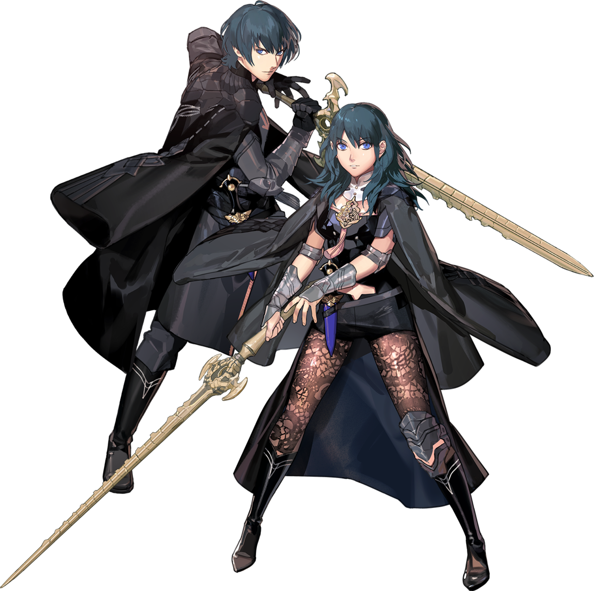
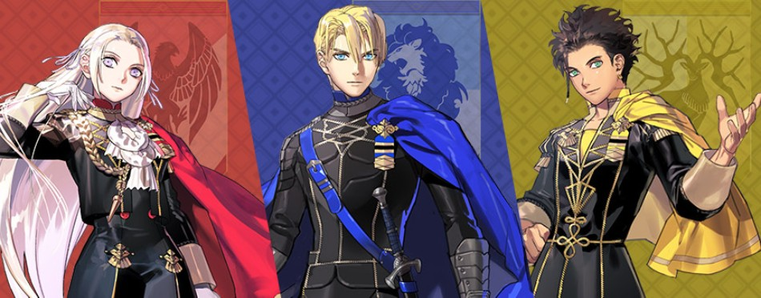
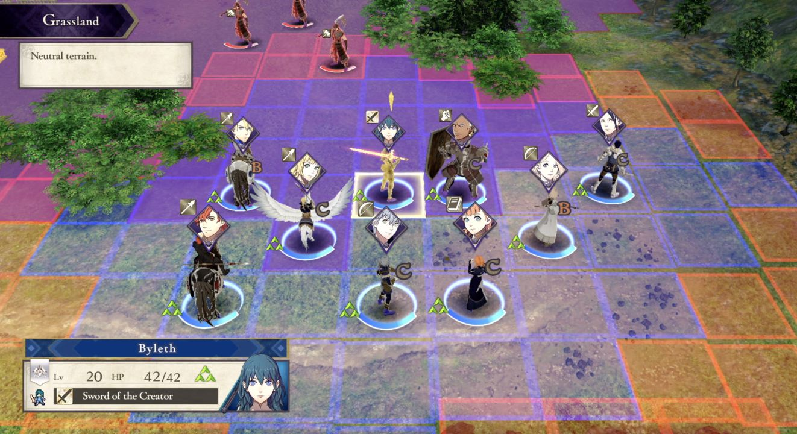

Discover the latest game in the FE franchise : Fire Emblem: Three Houses
Set in the continent of Fódlan, Fire Emblem: Three Houses reinvents the gameplay of the franchise for its arrival on the Nintendo Switch (on July 26th of 2019).
The game's playable protagonists.
You play as a professor at the Garreg Mach Monastery, teaching your students in the ways and techniques of battle.
Mixing phases where you teach and interact with your students at the monastery on one hand, and where you lead them to battle and put their acquired skills to the test on the other hand, this new game sets itself apart from the others in the series.
In order: Edelgard, Dimitri and Claude.
The game is split into 3 principal routes, hence the name Three Houses.
The entire story of the game changes based on the house you choose. As such, you can discover the story of your favorite house only, or play through all three of them in order to understand the full picture of the events occuring at Fódlan, as there are heavy changes occuring from one to another!
Gameplay Screenshot
The graphics are entirely in 3D, from the battle sections to the overhead map, a feature that was last seen in the 9th entry.
Running on the most modern engine seen in the series yet, both the game's 3D environments and artworks are beautiful and immersive!